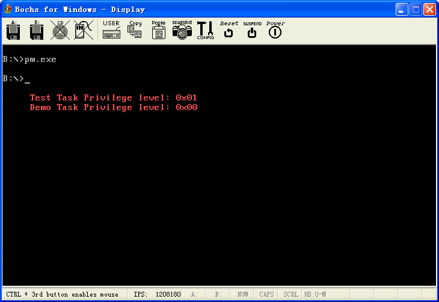

保护模式6:特权级转换的任务切换
文章目录
上一篇我们已经演示了特权级变换, 这一篇我们讲讲任务切换, 任务切换的话, 主要是特权级要注意, 如果特权级设置有错的话, 会崩溃.
关于这个任务切换可以通过TSS进行任务切换, 或者通过任务门进行任务切换, 如果是通过TSS进行任务切换的话, 可以使用Jmp或者段间转移指令CALL进行任务切换, 对于TSS的访问权限同数据段, 所以只有同级或者更内层的特权级才可以进行任务切换. 显然还有其他需求, 所以可以改用任务门进行切换.
如果Jmp或者CALL指向一个任务门描述符, 那么就按照数据段的访问规则检测任务门,对于TSS中的DPL却是忽略的, 还有任务门内的偏移是无效的. 这个和调用门有区别,要注意, 如果符合规则, 那么就可以开始任务切换了..
任务切换这个东西的话, 不能够递归, 任务切换又切换到自己上面, 这是不行的,当然如果是用jmp指令进行任务切换的话, 不进行链接, 这个就不算递归了, 只有CALL才算
对于Jmp和CALL都一样, 要求切换的任务必须是可用任务, 这个可以自己去修改段描述符,在代码中我们就修改了段描述符, 在测试任务返回演示任务的时候我们将原来的演示任务,从忙置为清闲, 才可以进行切换.
所以关于这个任务切换的话, 也没有太多难搞定的东西了, 主要是特权级的问题, 如果特权级不对就不能够做任务切换, 不过也没有问题, Bochs里面会提示的, 遇到崩溃了Bochs有提示.依照提示改好就行.. 没有太多可说的..
说说下面这个代码的逻辑含义, 首先在实模式下初始化该初始化的东西, 然后切换到保护模式的16位段在这个保护模式的代码段中, jmp到一个32位代码段, 然后在这个32位代码段中, 初始化测试任务的CS:EIP和演示任务的SS:ESP, LDTR, IOPL, 然后通过CALL切换到测试任务.
测试任务的话也没有做什么东西, 就是显示下自己的特权级, 当然是CS 和SS都是一级的, 所以当前特权级就是一级了. 显示完自己的特权级后, 然后就通过call又切换回演示任务, 当然在切换之前, 要将演示任务的TSS描述符从忙改为闲, 这个是用一个别名段来做到的.
切换到演示任务的时候, 再显示下自己的特权级, 当然现在特权级就是0级了, 然后切换到16位段, 从16位段切换到实模式, 然后搞定. 程序退出!
代码的逻辑含义的话, 就这么点东西, 还是那句话, 任务切换的时候必须注意特权级.还和以前一样, 有图有真相.
http://www.joenchen.com/JoenTools/TaskSwitching.rar

;============================================================================ ;演示保护模式下的任务切换 ;MASM9下编译. Link9.编译选项请参见 makefile TAB = 8 ;============================================================================ .686p Include pm.inc option casemap:none Stack_Len equ 1024 ;堆栈大小 ;============================================================================ GdtSeg Segment use16 ;全局描述符表 ; ;段基址 ;段界限 ;属性 Dummy: Descriptor 0, 0, 0 ;空的描述符 Normal: Descriptor 0, 0ffffh, DA_DRW ;规范段描述符 g_CodeTempDesc: Descriptor 0, 0ffffh, DA_C ;非一致代码段16位 g_VideoDesc: Descriptor 0b8000h,0ffffh, DA_DRW or DA_DPL3 ;显存段(可读写) g_Stack0Desc: Descriptor 0, Stack_Len-1, DA_DRW or DA_32 ;0环堆栈32 g_DemoCodeDesc: Descriptor 0, DemoCodeSegLen-1, DA_C or DA_32 ;32位代码段 g_DemoDataDesc: Descriptor 0, DemoDataSegLen-1,DA_DRW or DA_32 ;Demo数据段 g_DemoTssDesc: Descriptor 0, DemoTssSegLen-1, DA_386TSS ;演示任务TSS段描述符 g_DemoTssAliasDesc: Descriptor 0, DemoTssSegLen-1, DA_DRW or DA_DPL1 or DA_32 ;演示任务TSS段的别名段 g_TestTssDesc: Descriptor 0, TestTssSegLen-1, DA_386TSS ;测试任务TSS段描述符 g_TestStack1Desc: Descriptor 0, Stack_Len-1, DA_DRW or DA_DPL1 or DA_32 ;1环堆栈段 g_TestCodeDesc: Descriptor 0, TestCodeSegLen-1,DA_C or DA_32 or DA_DPL1 ;32位测试代码段 g_TestTssAliasDesc: Descriptor 0, TestTssSegLen-1, DA_DRW or DA_32 ;TSS别名数据段 g_GdtAliasDesc: Descriptor 0, GDTLen-1, DA_DRW or DA_32 or DA_DPL1 ;GDT别名段 g_TestLdtDesc: Descriptor 0, LdtTestSegLen -1,DA_LDT ;测试代码段的LDT描述符 ;—————————————————————————- ;任务门 段选择子 入口 参数个数 属性 g_TestTask: Gate g_TestTssSelector,_TestCodeBegin, 0, DA_TaskGate ;386任务门指向测试任务 g_DemoTask: Gate g_DemoTssSelector,_DemoEnd, 0, DA_TaskGate or DA_DPL1 ;386任务门从测试任务返回 ;—————————————————————————- GDT_Ptr word GDTLen-1 ;VGDT dword 0 _IDT_Ptr fword 0 ;VIDT _RegSp word ? ;用于保存SS:SP _RegSs word ? ;—————————————————————————- NormalSelector equ Normal - GdtSeg ;规范段选择子 g_CodeTempSelector equ g_CodeTempDesc - GdtSeg ;代码段选择子 g_Stack0Selector equ g_Stack0Desc - GdtSeg ;0环堆栈段选择子 g_DemoDataSelector equ g_DemoDataDesc - GdtSeg ;Demo数据段选择子 g_TestStack1Selector equ g_TestStack1Desc - GdtSeg + SA_RPL1 ;测试任务段的1环选择子 g_VideoSelector equ g_VideoDesc - GdtSeg ;LDT视频段选择子 g_DemoCodeSelector equ g_DemoCodeDesc - GdtSeg ;32位演示代码段选择子 g_DemoTssAliasSelector equ g_DemoTssAliasDesc - GdtSeg + SA_RPL1 ;演示任务的别名段 g_DemoTssSelector equ g_DemoTssDesc - GdtSeg ;TSS演示段描述符选择子 g_TestTssSelector equ g_TestTssDesc - GdtSeg ;TSS测试段描述符选择子 g_TestCodeSelector equ g_TestCodeDesc - GdtSeg + SA_RPL1 ;32位测试代码段选择子 g_TestTssAliasSelector equ g_TestTssAliasDesc - GdtSeg ;任务段别名段选择子 g_TestTaskSelector equ g_TestTask - GdtSeg ;任务门选择子 g_TestLdtSelector equ g_TestLdtDesc - GdtSeg ;测试代码段的LDT g_GdtAliasSelector equ g_GdtAliasDesc - GdtSeg + SA_RPL1 ;GDT别名段 GDTLen equ $ - GdtSeg ;GDT长度 GdtSeg Ends ;============================================================================ LdtTestSeg Segment use32 ;测试任务段的LDT L_TestDataDesc: Descriptor 0, TestDataSegLen-1, DA_DRW or DA_DPL1 ;测试任务数据段
L_TestDataSelector equ L_TestDataDesc - LdtTestSeg + SA_TIL ;测试代码的数据段 LdtTestSegLen equ $ - LdtTestSeg LdtTestSeg Ends ;============================================================================ Stack0 Segment use32 byte Stack_Len dup (0) Stack0 Ends ;============================================================================ Stack1 Segment use32 byte Stack_Len dup (0) Stack1 Ends ;============================================================================ TestDataSeg Segment use32 ;测试代码段的数据段 SzTestMessage byte "Test Task Privilege level: 0x", 0 TestDataSegLen equ $ - TestDataSeg TestDataSeg Ends ;============================================================================ DemoDataSeg Segment use32 ;Demo代码段的数据段 SzDemoMessage byte "Test Task Privilege level: 0x", 0 DemoDataSegLen equ $ - DemoDataSeg DemoDataSeg Ends ;============================================================================ IdtSeg Segment use32 ;中断描述符表 IdtSegLen equ $ - IdtSeg IdtSeg Ends ;============================================================================ TestCodeSeg Segment use32 ;测试代码段
_TestCodeBegin equ $ - TestCodeSeg ;测试代码段入口 TestCodeBegin Proc
mov ax, g\_VideoSelector
mov es, ax
mov ax, L\_TestDataSelector
mov ds, ax
cld
;—————————————————————————- ;显示调用任务的CS, mov esi, offset SzTestMessage mov ecx, sizeof SzTestMessage - 1 mov edi, 80 * 2 * 5 + 5 * 2 ;5行5列
@@: lodsb mov ah, 0ch ;显示字符串1 stosw loop @b ;—————————————————————————- mov ax, cs and al, 11b xor cl, cl shl al, 7 rcl cl, 1 ;将特权级的高位移动过来 add cl, '0'
sal al, 1
rcl al, 1
add al, '0'
mov ah, 0ch
shl eax, 16
mov al, cl
mov ah, 0ch ;打印特权级
stosd
;—————————————————————————- ;将任务由忙到可用 mov ax, g_GdtAliasSelector ;GDT别名段 mov fs, ax mov ebx, offset g_DemoTssDesc ;DEMO描述符 mov al, byte ptr fs:[ebx+5] ;置任务为可用任务 and al,0f0h or al, 9h ;将任务置为可用 mov byte ptr fs:[ebx+5], al ;—————————————————————————- ;改变任务的执行位置, 比较邪恶 mov ax, g_DemoTssAliasSelector mov fs, ax ;fs–>临时代码别名段 mov esi, offset DemoTss mov eax, _DemoEnd mov dword ptr fs:[esi+TSS.regEip], eax ;—————————————————————————- CALL32 g_DemoTask, 0 ;返回0环 TestCodeBegin Endp TestCodeSegLen equ $ - TestCodeSeg TestCodeSeg Ends ;============================================================================ DemoCodeSeg Segment use32 ;演示代码段
_DemoBegin equ $ - DemoCodeSeg DemoBegin Proc ;32位代码段入口
mov ax, g\_TestTssAliasSelector ;TSS别名段
mov ds, ax
mov ebx, offset TestTss
;—————————————————————————- ;初始化演示代码段的SS:ESP和CS:EIP mov word ptr ds:[ebx+TSS.regSs], g_TestStack1Selector mov dword ptr ds:[ebx+TSS.regEsp], Stack_Len;初始化TSS的SS:ESP
mov word ptr ds:\[ebx+TSS.regCs\], g\_TestCodeSelector
mov dword ptr ds:\[ebx+TSS.regEip\], \_TestCodeBegin
mov dword ptr ds:\[ebx+TSS.regEflags\], IOPL1 ;TSS的IOPL值
mov word ptr ds:\[ebx+TSS.regLdtr\], g\_TestLdtSelector
;—————————————————————————- ;通过任务门转移到 TestCodeSeg–>_TestCodeBegin CALL32 g_TestTaskSelector, 0 DemoBegin Endp ;============================================================================ _DemoEnd equ $ - DemoCodeSeg DemoEnd Proc ;从1环返回
;—————————————————————————- ;打印一个字符串DemoTask! mov ax, g_VideoSelector mov es, ax
mov ax, g\_DemoDataSelector
mov ds, ax
cld
mov esi, offset SzDemoMessage
mov ecx, sizeof SzDemoMessage - 1
mov edi, 80 \* 2 \* 6 + 5 \* 2 ;5行5列
@@: lodsb mov ah, 0ch stosw loop @b ;—————————————————————————- mov ax, cs and al, 11b xor cl, cl shl al, 7 rcl cl, 1 ;将特权级的高位移动过来 add cl, '0'
sal al, 1
rcl al, 1
add al, '0'
mov ah, 0ch
shl eax, 16
mov al, cl
mov ah, 0ch ;打印特权级
stosd
;—————————————————————————- Jmp32 g_CodeTempSelector, _GoToProtect ;返回实模式 DemoEnd Endp DemoCodeSegLen equ $ - DemoCodeSeg DemoCodeSeg Ends ;============================================================================ DemoTssSeg Segment use32 ;演示任务TSS段 DemoTss TSS <0> byte 0ffh DemoTssSegLen equ $ - DemoTssSeg DemoTssSeg Ends ;============================================================================ TestTssSeg Segment use32 ;测试任务TSS段 TestTss TSS <0> IoMap label byte ;IO许可位图 TestTssSegLen equ $ - TestTssSeg TestTssSeg Ends ;============================================================================ ;16位段, 由实模式跳入 ;============================================================================ g_Code16Seg Segment use16 _GoToProtect Proc ;返回实模式 mov ax, NormalSelector mov fs, ax ;规范选择子 mov es, ax mov ds, ax mov ss, ax clts ;清除任务标记
mov eax, cr0 ;关PE位, 进入实模式
and al, 0feh
mov cr0, eax
;刷新段选择子缓冲区, 退回实模式
Jmp16 <seg StartCodeSeg >, < offset \_RealProtect >
_GoToProtect Endp ;—————————————————————————- _ProtectEntry Proc ;实模式跳入入口 mov ax, 0 mov ds, ax mov es, ax mov fs, ax mov gs, ax ;置各选择子为NULL
mov ax, g\_Stack0Selector
mov ss, ax
mov esp, Stack\_Len ;初始化0环Ss:Esp
;—————————————————————————- mov ax, g_DemoTssSelector ltr ax ;装载TSS任务寄存器
;16位转32位代码段
Jmp16 g\_DemoCodeSelector, <\_DemoBegin >
_ProtectEntry Endp g_Code16Seg Ends ;============================================================================ ;起始代码段初始化保护模式的各个结构, 然后跳入保护模式 ;============================================================================ StartCodeSeg Segment use16 _InitGdt Proc uses es ;初始化全局描述符表 local _Vidt:fword
xor eax, eax
mov ax, GdtSeg
mov es, ax ;es-->全局描述符表
;—————————————————————————- shl eax, 4 mov dword ptr es:[GDT_Ptr+2], eax ;初始化VGDT描述符 ;—————————————————————————- xor eax, eax mov ax, g_Code16Seg ;初始化十六位的代码段 shl eax, 4 mov word ptr es:[g_CodeTempDesc+2], ax ;段基址低位 shr eax, 16 mov byte ptr es:[g_CodeTempDesc+4], al ;段基址高地址低位 mov byte ptr es:[g_CodeTempDesc+7], ah ;段基址高地址高位 ;—————————————————————————- xor eax, eax mov ax, Stack0 ;初始化0环堆栈段 shl eax, 4 mov word ptr es:[g_Stack0Desc+2], ax shr eax, 16 mov byte ptr es:[g_Stack0Desc+4], al mov byte ptr es:[g_Stack0Desc+7], ah ;—————————————————————————- xor eax, eax mov ax, DemoCodeSeg ;初始化32位代码段 shl eax, 4 mov word ptr es:[g_DemoCodeSelector+2], ax shr eax, 16 mov byte ptr es:[g_DemoCodeSelector+4], al mov byte ptr es:[g_DemoCodeSelector+7], ah ;—————————————————————————- xor eax, eax mov ax, DemoTssSeg ;初始化演示TSS段描述符 shl eax, 4 mov word ptr es:[g_DemoTssDesc+2], ax shr eax, 16 mov byte ptr es:[g_DemoTssDesc+4], al mov byte ptr es:[g_DemoTssDesc+7], ah ;—————————————————————————- xor eax, eax mov ax, TestTssSeg ;初始化测试TSS段描述符 shl eax, 4 mov word ptr es:[g_TestTssDesc+2], ax shr eax, 16 mov byte ptr es:[g_TestTssDesc+4], al mov byte ptr es:[g_TestTssDesc+7], ah ;—————————————————————————- xor eax, eax mov ax, Stack1 ;初始化1环堆栈段 shl eax, 4 mov word ptr es:[g_TestStack1Desc+2], ax shr eax, 16 mov byte ptr es:[g_TestStack1Desc+4], al mov byte ptr es:[g_TestStack1Desc+7], ah ;—————————————————————————- xor eax, eax mov ax, DemoDataSeg ;初始化Demo数据段 shl eax, 4 mov word ptr es:[g_DemoDataDesc+2], ax shr eax, 16 mov byte ptr es:[g_DemoDataDesc+4], al mov byte ptr es:[g_DemoDataDesc+7], ah ;—————————————————————————- xor eax, eax mov ax, TestCodeSeg ;初始化测试代码段 shl eax, 4 mov word ptr es:[g_TestCodeDesc+2], ax shr eax, 16 mov byte ptr es:[g_TestCodeDesc+4], al mov byte ptr es:[g_TestCodeDesc+7], ah ;—————————————————————————- xor eax, eax mov ax, TestTssSeg ;初始化测试代码别名段 shl eax, 4 mov word ptr es:[g_TestTssAliasDesc+2], ax shr eax, 16 mov byte ptr es:[g_TestTssAliasDesc+4], al mov byte ptr es:[g_TestTssAliasDesc+7], ah ;—————————————————————————- xor eax, eax mov ax, DemoTssSeg ;初始化演示代码别名段 shl eax, 4 mov word ptr es:[g_DemoTssAliasDesc+2], ax shr eax, 16 mov byte ptr es:[g_DemoTssAliasDesc+4], al mov byte ptr es:[g_DemoTssAliasDesc+7], ah ;—————————————————————————- xor eax, eax mov ax, GdtSeg ;初始化GDT别名段 shl eax, 4 mov word ptr es:[g_GdtAliasDesc+2], ax shr eax, 16 mov byte ptr es:[g_GdtAliasDesc+4], al mov byte ptr es:[g_GdtAliasDesc+7], ah ;—————————————————————————- xor eax, eax mov ax, LdtTestSeg ;初始化测试代码段的LDT shl eax, 4 mov word ptr es:[g_TestLdtDesc+2], ax shr eax, 16 mov byte ptr es:[g_TestLdtDesc+4], al mov byte ptr es:[g_TestLdtDesc+7], ah ;—————————————————————————- sidt fword ptr es:[_IDT_Ptr] ;保存IDT
mov word ptr ss:\[\_Vidt\], IdtSegLen ;IDT长度
mov eax, IdtSeg
shl eax, 4
mov dword ptr ss:\[\_Vidt+2\], eax
lidt fword ptr ss:\[\_Vidt\] ;装载IDT
lgdt fword ptr es:\[GDT\_Ptr\] ;装载GDT
;—————————————————————————- ret _InitGdt Endp ;—————————————————————————- _InitLdt Proc uses es
mov ax, LdtTestSeg
mov es, ax
;—————————————————————————- xor eax, eax mov ax, TestDataSeg ;初始化测试代码段的数据段 shl eax, 4 mov word ptr es:[L_TestDataDesc+2], ax shr eax, 16 mov byte ptr es:[L_TestDataDesc+4], al mov byte ptr es:[L_TestDataDesc+7], ah ;—————————————————————————- ret _InitLdt Endp ;—————————————————————————- Jmain Proc
call \_InitGdt ;初始化GDT全局描述符
call \_InitLdt ;初始化LDT局部描述符
;—————————————————————————- mov ax, GdtSeg mov ds, ax
mov ds:\[\_RegSs\], ss
mov ds:\[\_RegSp\], sp ;保存SS:SP
cli
\_EnableA20 ;关中断开A20地址线
mov eax, cr0
or eax, 1
mov cr0, eax ;开启分段, 进入保护模式
;—————————————————————————- Jmp16 g_CodeTempSelector, <offset _ProtectEntry>;跳入保护模式
Jmain Endp ;—————————————————————————- _RealProtect Proc ;返回保护模式
mov ax, GdtSeg
mov ds, ax
lss sp, dword ptr ds:\[\_RegSp\] ;恢复SS:SP
lidt fword ptr ds:\[\_IDT\_Ptr\] ;恢复IDT
\_DisableA20 ;关A20地址线, 开中断
sti
mov ax, 4c00h
int 21h
_RealProtect Endp StartCodeSeg Ends
End Jmain
文章作者 忆杰
上次更新 2011-09-20